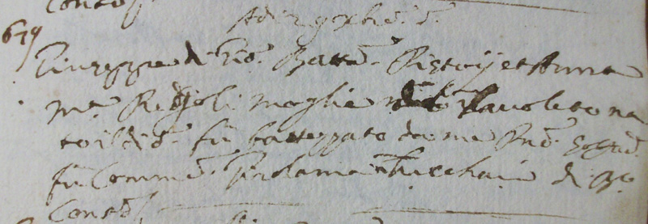

|
USCENDO DA PORTA ROMANA pagina 8
|
|||||||||||||||||
- "Jacomo di Marcho di Fiumetto stato di Modena morse accidentalmente nell'osteria delli Angeli fu sepolto il 24 luglio 1629..." (AAS, S.Mamiliano in Valli 2456, c.s.n.) - L'osteria traeva il nome dalla vicina chiesa di Santa Maria degli Angeli in Valli, sorta come pertinenza di un convento di frati in prossimità di Porta Romana sulla via del pellegrinaggio per Roma.
- "Laurentia di Storgio Hoste al Pavone si seppellì il dì 4 dicembre 1621..." (AAS, S.Mamiliano in Valli 2456, c.s.n.). - La presenza del Palio nella vita di Siena è quasi millenaria. Fin dal 1200, si ha testimonianza di una corsa di cavalli, documenti anteriori al XII secolo ci ricordano di un Palio di San Bonifazio, che era il santo titolare dell’antica Cattedrale, che prima della fondazione del Duomo attuale, dedicato alla Vergine Maria, sorgeva in Castelvecchio. Nel corso del medioevo e durante il rinascimento si organizzavano molte corse; nobili signori, notabili, cittadini senesi ed anche forestieri portavano i loro migliori cavalli per i giochi, che si svolgevano per onorare le feste di santi o per celebrare la ricorrenza di speciali eventi. Questa corsa era collegata con la cerimonia dell’offerta del cero e dei censi all’Assunta, rito a carattere religioso, mentre il palio era una manifestazione popolare di festa. Questo palio fu detto “alla lunga”. Di esso esistono antichi documenti e venne ufficialmente inserito nello statuto comunale nel 1310 come festa nel giorno dell’Assunta. Il drappellone era di stoffa preziosa, foderato di pelli di vaio e vi erano disegnati gli stemmi dei governanti della città. Nel secolo successivo, per far bella figura con i famosi personaggi dell’epoca il tessuto divenne ancora più prezioso. Nonostante la peste fu corso anche nel 1348 e nel 1349. Furono successivamente stabilite nel 1366 alcune norme di comportamento per rendere la corsa più sicura. Tra il 1408 ed il 1460 alcuni Papi, Imperatori, assistettero al palio alla lunga nel loro passaggio dalla nostra città. Nel 1476 ci fu una nuova epidemia di peste, ma questo Palio fu corso ugualmente. L’ultimo regolamento porta la data del 1529. La storia ci ricorda pure di una sommossa, in seguito ad un arresto dopo la corsa del 15 agosto 1691. In occasione di un palio alla lunga svoltosi il 15 maggio 1767 l’Accademia dei Rozzi aveva fatto preparare un carro, su cui era posta una bandiera di broccato d’oro per il cavallo vincitore. A partire dal 1389, la partenza della corsa aveva luogo presso l’osteria del Pavone, davanti alla Chiesa di Santa Maria degli Angeli in Valli, oggi Chiesa della Compagnia, questa scelta risultò poi pericolosa in quanto alcuni cavalli deviavano verso Certosa e pertanto la mossa fu definitivamente spostata di fronte alla Chiesa del Monastero di Santa Maria degli Angeli detta successivamente del Santuccio. (Per leggere l'intero testo CLICCA QUI)
- "Adì 11 Marzo 1706 à Nativitate. Carlo Paier, già fameglio, e
adesso Oste alla
Coroncina, della Cura di S.Mamiliano fuora dalla Porta Romana
se ne passò all'altra vita
il dì sopradetto..." (AAS, Siena S.Martino 1325, c.56v, n.407). - Da Antonio Taraffi Caporale della squadra della Montagnola, fù arrestato
e condotto nelle carceri di questo Tribunale, Anton Giuseppe Cellesi soldato pedestre lavoratore del Marchese Palli in
Vescovado, per averlo trovato il dì cinque del corrente mese d'agosto (1748), per la strada romana di là dall'osteria della Coroncina
armato di coltello di corta misura che usava senza facoltà..." (ASS, Capitano di Giustizia 696, n.31, pag. 103, 13 agosto 1748).
- "Adì 9 Ottobre 1637 Venardì. Basilio di Domenico Giani hoste à
Colle Malamerenda d'età
d'anni 84 stato ferito in testa da certi passaggieri
forestieri, è venuto a Siena nella
locanda di S.Pavolo in Salicotto..." (AAS, Siena S.Giovanni Battista 1111, c.51r,
n.328). - Alberghi, locande e
taverne erano anche luoghi ideali per l'espressione di varie
forme di delinquenza e non di
rado l'oste doveva essere impegnato a tenere calmi gli animi
all'interno del suo locale. A
proposito di fatti delittosi non ci possiamo scordare la
leggenda che vuole che a
Malamerenda, il lunedì dell'Angelo del 1337, fossero uccisi a
tradimento dai Salimbeni,
ben diciotto Tolomei. Doveva essere un banchetto per riportare
la pace tra due delle più
potenti famiglie senesi, ma durante il banchetto si ebbe un
epilogo diverso. Malamerenda
trae probabilmente il nome da questo fatto, anche se certi
documenti assicurano che il
toponimo sia già esistito prima del '300. Comunque è certo che
qualcosa deve essere pur
accaduto in quel periodo e nonostante la storia riporti che la
pace tra le due famiglie
sia stata ratificata solennenemte in Palazzo Pubblico il 4
ottobre 1337, ancor oggi, lungo
una scala che conduce all'antico chiostro di S.Francesco, ci
sono diciotto tombe di
altrettanti Tolomei.
- "Adì 23 Maggio 1669 in giovedì. Domenico detto Mencarello hoste a S.Ristore nel tornare da Fiorenza mentre se
nandava a casa sua, gli sopraggiunse la febbre con pena et il 22 detto a hore diciotto in circa l'amministrai
e il Sacramento della Penitenza si come la mattina doppo il S.Sacramento dell'Eucarestia e questo fù nell'Osteria
dell'Isola"... (AAS, S.Ilario all'Isola 1204, c.s.n.).
 - "Adì 3 Dicembre 1625. Bartolomeo figlio di Domenico hoste all'Oca morì il dì 3 Dicembre, e il dì seguente fu sepolto nel Cimitero di questa Chiesa [S.Giusto e Donato a Monteroni], et era d'anni 10 in circa..." (AAS, SS.Giusto e Donato a Monteroni 1557, n.12).
- "Michelangelo figlio di Mattio Cipriani hoste nella Scala di
Monteroni passò a miglior
vita il dì 12 Luglio 1625..." (AAS, SS.Giusto e Donato a Monteroni 1557, n.5). - Non tutte le persone che prendevano i cavalli in prestito
erano oneste.
Ne fa fede infatti, che "Antonio di Benedetto Mandini della città di Melfi in Regno di Napoli
sia debitore d'avere la mattina del dì 5 Marzo prossimo passato 1766 preso a vettura da Francesco Filippi Oste a Montaroni
un cavallo bardato di tutti i suoi finimenti, di valuta in tutto scudi diciotto, per Siena, a condizione di lasciarlo in detta
città nell'Osteria del Re, ove avrebbe mandato un suo garzone, ed in vece di lasciarlo alla detta Osteria, proseguisse
il viaggio per Pistoia con animo d'appropriarsi di detto cavallo, il che non li riuscì, atteso essere stato arrestato con il cavallo medesimo..."
(ASS, Capitano di Giustizia 700, causa 71, 26 aprile 1766).

- "Adì 6 Ottobre 1705. Lucia di Antonio Romanelli Postiere [chi organizzava il servizio postale delle diligenze]
all'Osteria della Corona del
Piissimo Spedale [S.Maria della Scala] morì circa la mezza
notte di detto giorno havendo
riceuti i Santissimi Sacramenti...; il giorno seguente fu
seppellita nella Sepoltura delle
Donne in questa Chiesa, essendo d'Anni cinquantuno..." (AAS SS.GIusto e Donato a MOnteroni
1567, c.s.n.) - Questa
osteria che rimase efficiente fino agli anni '50 del XX
secolo e che si trovava dove sono stati recentemente i locali
della Pubblica Assistenza di Monteroni d'Arbia, esisteva (anche
se probabilmente in un
altro edificio) già prima del 1571, come testimonia il
battesimo di "Horatio figlio di
Bastiano hoste alla Corona", nato il 19 novembre di quell'anno.
(AAS, S.Giovanni Battista a Lucignano 1251, c.34r.)
- "Adì 16 Ottobre 1708. Orsola del già Francesco Filippi
habitante in Monteroni nella sua Osteria del Leone d'Anni 70 in circa morì il giorno detto
nell'un'hora di notte..." (AAS, SS. Giusto e Donato a Monteroni
1567, c.s.n.). - E' confermato che la famiglia Filippi esercitasse il mestiere di albergatore da generazioni,
si osserva infatti che nel 1765, "Francesco Filippi
Supplicante [nipote omonimo di colui che gestiva un secolo prima La Corona], Oste a Monteroni
d'Arbia, fu Processato perchè
avendo comprato nella di Lui propria Osteria da Tommaso
Tognarini d'Acquapendente Stato
Pontificio, sotto lì 2 Gennajo del Corrente Anno, Staja tre di
Fagiuoli per il Prezzo di
Paoli Sei e mezzo lo Stajo, in pagamento dei medesimi oltre
alle altre monete gli dasse
due Quartini d'Oro Romani valutandoli Crazie trentotto l'uno
contro l'espressa proibizione
della Vegliante Legge..." (ASS, Capitano di Giustizia 750, 20
aprile 1765).
- "Adì 7 Agosto 1669. Angela di Andrea Straccali Oste alla
Campana [a Lucignano d'Arbia] passò al
altra vita il dì 6 Agosto di età sua di mesi dodici e fu
sepolta nel nostro solito
Cemiterio delli Parvoli da me Giuseppe Ciolfi Vice Curato..." (AAS, S.Giovanni Battista a Lucignano 1285, p.21).
- "Adì 4 Luglio 1630. Morì e fu seppellito adì sopradetto un povero contadino del quale non si poté sapere ne patria ne nome perché arrivato nel Osteria del Leoncino [a Lucignano d'Arbia] perse la parola e lì morse et hebbe l'assolutione et l'Estrema Untione." (AAS, S.Giovanni Battista a Lucignano 1284, f1). Da altri documenti, sappiamo che detta osteria era in località detta "Il Poggetto".
- "Adì 7 Settembre 1663. Dionisio Roche de Leone [Lione] di
Francia passò da questa vita
questo sopradetto giorno arrivato al Hostaria del Angelo [a
Lucignano d'Arbia] il giorno
antecedente circa l'hore 23, che non parlava più e da me
Gherardo Natali li fu
amministrato il Santissimo Sagramento dell'Estrema Unzione,
come anco della
raccomandatione del Anima, havendo visto la fede del
Reverendissimo Prete Honorato Fabbri
Penitenziere [confessore che aveva facoltà per assolvere i casi
riservati ai Vescovi] del
Altissima Città di Roma come per sua presente spedita sotto il
dì 31 Agosto prossimo
passato. .." (AAS, S.Giovanni Battista a Lucignano 1284, n.90).
 Sigillo di un'Assoluzione Sacramentale del 24 maggio 1693 (AAS, SS.Pietro e Paolo a Buonconvento 616, carta sciolta)
- "Adì 17 Ottobre 1672. Francesco Danielli Oste alla Posta, morì
il dì 16 detto, e fu
seppellito da me Prete Cristofano in questo Cimitero...
[Lucignano d'Arbia]" (AAS, S.Giovanni Battista a Lucignano 1285, p.38).
- "Adì Primo Novembre 1752. Michel'Angelo Cavallini abitante a
pigione a Ponzanello del
Piissimo Spedale Cura di S.Martino in Grania, rese lo Spirito a
Sua Divina Maestà presso
l'Osteria della Corona detta il Pantano del Nob. Sig. Landi
Cura di Lucignano..." (AAS, S.Giovanni Battista a Lucignano
1288, n.104).- In un'epoca di grandi disagi economici, era
divenuto anche troppo frequente
abbandonare i figli appena nati. Spesso avvolti in stracci
dentro ceste di vimini, i
neonati venivano lasciati nelle "ruote" degli ospedali o sui
sagrati delle chiese, solo
raramente nelle osterie, luoghi poco adatti a ricevere piccoli.
Sfatando questa
consuetudine abbiamo invece trovato che: "Adì 16 Agosto 1781.
Maria Assunta nata di
incerti parenti fù Lasciata di notte all'Osteria della Corona
detta il Pantano del Nobile
Signore Carlo Landi Patrizio Senese, e del popolo di questa
Pieve di S.Giovanni Battista
a Lucignano d'Arbia, e da me Piovano Giovanni Nardini fù
battezzata Sub Condizione,
secondo il Rito di Santa Madre Chiesa." (AAS, S.Giovanni Battista a Lucignano 2674, c.s.n.).
- "Adì 22 Novembre 1678. Passò all'Altra vita Angelica figlia di Giuseppe Mazzeschi Oste all'Olmo del Ponte d'Arbia di età anni quattro..."
(AAS, S.Bartolomeo a Leonina 1222, n.163). Ponte d'Arbia è documentata fin dal primo Medioevo poiché si trova lungo il tragitto l'antica Via Francigena.
Il 24 agosto 1313, a meno di un chilometro dal paese, vi morì Enrico VII di Lussemburgo, imperatore del Sacro Romano Impero, di cui parla anche Dante nella Divina Commedia. Re di Germania dal 1308, scese in Italia tre anni più tardi
per sostenere la causa
ghibellina, ma soprattutto per esaudire il suo ambizioso sogno
di farsi incoronare
imperatore dal Papa Clemente V. L'imperatore, secondo fonti storiche, sarebbe stato avvelenato durante la comunione da un frate del convento di Buonconvento.
- "Adì 20 di Luglio 1642. Rosada del già Giuseppe Buldrini
habitante all'Osteria della
Corona al Ponte d'Arbia morì d'età d'anni Settanta sei fu
trovata morta nel Pelago
dell'Arbia patendo di cattivi mali fu seppellita nella Chiesa
di Seravalle..." (AAS, S.Lorenz oa Sprenna in Serravalle 2196,
c.s.n.). - Attraversare l'Arbia, talvolta guadandola, doveva
essere assai pericoloso, come
ci confermano le morti per annegamento di diversi viandanti
forestieri e pellegrini
diretti o di ritorno da Roma.
 Ponte d'Arbia nel 1629 - "Adì 22 di Gennaio 1625. Morì questo dì detto Jacinto di Bartolomeo e di Donna Alessandra sua moglie, al presente abitanti all'Osteria di San Giovanni nel Ponte [d'Arbia] fu sepolto alla pieve..." (AAS, S.Lorenzo a Sprenna in Serravalle 2196, c.s.n.). - Fra i reati di piccola entità che venivano commessi nella zona, ne abbiamo scelto uno assai curioso del maggio del 1756, quando Giovanni Battista Pepi, Michele Guarnieri, Santi Lorenzini e Angelo Ancilli, contadini delle vicinanze di Siena, "furono questi sorpresi in fragrante dai Famigli della Montagnola nell'atto che stavano gettando della Calcina viva in un Pelago, o Pozzo, che voglia dirsi, del fiume Arbia, per ammazzarvi del Pesce. A vista della Corte, si misero in fuga, ed il Pepi solo fu arrestato". (Capitano di Giustizia, 750, c.s.n.).
- "Adì 21 Aprile 1674. Ritrovandosi Pietro Giusti habitante alla Busa al Ponte d'Arbia ammalazzato, gli avvenne un accidente, et essendo stato da qualcheduna persona veduto, fu portato à casa sua in una barella da concime, e subbito fù da me Prete Giuseppe Maria Baccinetti confessato e per haver subbito persa la favella gli diedi l'oglio Santo, e subbito passò all'altra vita dell'età sua anni quaranta a fù portato a seppellirsi nel Cimitero della Pieve di S.Lorenzo a Sprenna." (AAS, S.Lorenzo a Sprenna in Serravalle 2222, n.46) - La conferma dell'esistenza di questa osteria, l'abbiamo in una causa criminale di qualche decennio precedente, quando tale Vincenzo Scarpellini dal Ponte ad Arbia abitante alla Magione, "havendo aspettato al Rev. Ms. Antonio Bartali Cappellano del Sig. Canononico Fanti Prebendario della Pieve a Sprenna circa le 23 hore all’Osteria detta la Busa doppo và contro armato di bastone indotto da diabolica suggestione, gli tirò due bastonate in grave pregiuditio suo, e con scandalo pubblico". (AAS, Cause Criminali 5522, n.3, 26 gennaio 1610).
- "Adì 20 Settembre 1687. Giovanni Chierici Famiglio Forestiero
morì questo dì detto nella
Hosteria della Posta, e fatte le solite Esequie fu sepolto
nella Sepoltura dello Spedale
[di Buonconvento]. (AAS, SS.Pietro e Paolo a Buonconvento 616, n.25). - Dalla visita fatta
nell'anno 1676 dal Sig.
Bartolomeo Gherardini per conto del Granduca Cosimo III al
Castello di Buonconvento,
riguardo alle cinque osterie che erano all'interno delle mura,
si viene a sapere che
"...specie quella della Posta è così mal tenuta, che poca gente
vi si ferma...".
- "Adì 13 Settembre 1659. Margarita parvola d'anni uno figlia
del già Antonio Magi da
S.Quirico, hoggi habitante con Caterina sua Madre nell'Hosteria
della Fortuna nella nostra
Cura, morse il 13 Settembre 1659 e fu seppellita nella Pieve di
Buonconvento nella
Sepoltura delle Creature della Compagnia di S.Pietro ..."
(AAS, SS.Pietro e Paolo a Buonconvento 613, n.27).
 Altra testimonianza su l'Osteria della Fortuna (AAS, SS.Pietro e Paolo a Buonconvento 614, c.s.n.)
- "Carlo di Bastiano da Pientia morì il dì primo Agosto 1646 nel
Osteria del Angelo non
ricevè alcun Sacramento perchè trovato morto si crede dalla
fatica e disagio patito alla
Guerra [contro Orbetello], fu sepolto nel Avello dello
Spedale [di Buonconvento]."
(AAS, SS.Pietro e Paolo a Buonconvento 612, n.268).

- "Adì 29 dicembre 1622. L'Ill.mo et Rev.mo Sig.r Lodovico
Barone di Molard (?) Cavaliere
Teutonico [tedesco], Consigliere, Camariere di Sua Maestà
Cesarea*, fermatosi ammalato nel
Ostaria del Sole, nella nostra Parrocchia [Buonconvento] il dì
22 Dicembre 1622 ricevuti
li Sacramenti della Penitenza e dell'Estrema Untione morì in
detto luogo il dì 29 di detto
e del età sua l'anno 53 in circa si come referirono li suoi
servitori; et il dì 30 del
medesimo per essere lui religioso fu seppellito nella sepoltura
de Sacerdoti della nostra
Chiesa si come se ne vede anco di ciò la memoria a piedi della
detta Sepoltura." (AAS, SS.Pietro e Paolo a Buonconvento
611, n.1004). - L'osteria deve aver suggerito pure il nome
della strada, tanto che ancor
oggi a Buonconvento c'è la via del Sole.
- "Adì 23 di Luglio 1587. Morì Maria Assunta di Marcantonio
Fiorentino di presente garzone
alla Corona et il dì detto si sotterrò..." (AAS, SS.Pietro e Paolo a Buonconvento 611, n.166).
- "Supplitia moglie del già Pietro Catoni d'anni 50 in circa
habitante al Hosteria del
Tavoleto nella Cura di Percena passò all'altra vita il 4
Settembre 1664..." (AAS, SS.Pietro e Paolo a Buonconvento 613,
n.82). Fra queste mura nacque il 29 dicembre 1701 Giuseppe Pistoj, (cfr.) fantino vincitore due volte al Palio di Siena (nel 1732 e 1733) e figlio del celeberrimo Giovan Battista detto Cappellaro, anche lui più volte vittorioso (cfr.).  Battesimo di Francesco Pistoj (AAS, SS.Pietro e Paolo a Buonconvento n.593, c.s.n.)
- "Adì 30 Settembre 1779. Morì per strada all Osteria del
Galluzzo Giovan Battista
Boschirolo nativo della Villa di Caprigniana Diogesi di Crema
in età di Anni 46 ammalatosi
per strada nella medesima Osteria..."(AAS, SS.Pietro e Paolo a Buonconvento 619, n.100).
- "Adì 14 Giugno 1717. Margarita consorte di Bartolomeo Bracci
Oste a Torrenieri venuta a
Siena inferma alla camera locanda della Croce Bianca doppo
alcuni giorni di male rese lo
Spirito a Sua Divina Maestà..." (AAS, Siena S.Giovanni Battista 1111, c.30r, n.174).
- "1593. Maria Caterina d'Antonfrancesco Hoste da Montalcino, si
seppellì il dì 23 di
Maggio in S.Francesco..." (AAS, Siena S.Salvatore in S.Agostino 2101, c.42r). - Montalcino
doveva essere pure un crocevia
per i contrabbandieri di sale, come abbiamo riscontrato da
questo fatto: "Si Fa memoria,
come la notte del dì 9 Gennaio 1765 essendo stato ammazzato
verso il Fiume, e Poggio
d'Orcia da Famigli di Mont'Alcino Un'Uomo, quale dicesi nel
Processo [rapporto], chiamarsi
Pavolo Landi di Garliano [Galliano, frazione di Barberino del
Mugello], stato Fiorentino,
in atto, che aveva seco sei somari caricati di Sale Forestiero
in Stara 24* in circa,
essendo Egli armato di Schioppo e Coltella, da Sudetti Famigli
il dì 12 Gennaio anno detto
alle dieci in circa della mattina fu portata la di Lui Testa, e
condotti detti Somari con
detto Contrabando nel magistrato del Sale**, alla Porta del
quale dopo mezzo giorno fu
esposta detta Testa, ivi stando interpolatamente
[ininterrottamente] fino alle tre ½ in
circa della sera del 13 detto..." (AAS, Siena S.Giovanni Battista 1115, n.158).
* Stara - Plurale stajo. Ventiquattro
stara erano uguali a un
moggio, ossia a otto sacca, che corrispondevano a circa 585
chili.
| |||||||||||||||||